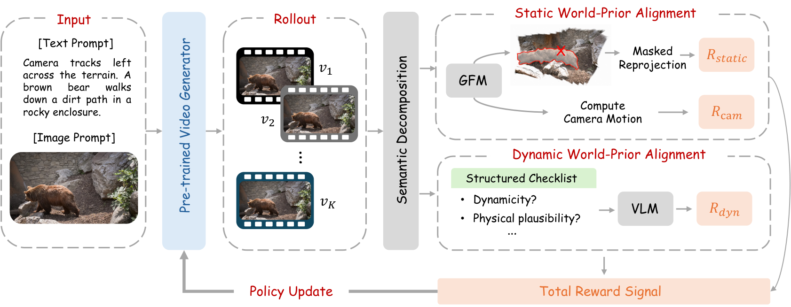

01Preserve static geometry
A geometric world prior reconstructs and reprojects the scene. Semantic masks exclude moving subjects while retaining inconsistent static regions, so legitimate subject motion is not penalized.
1The Hong Kong University of Science and Technology (Guangzhou) 2The Hong Kong University of Science and Technology
3KlingAI 4The University of Hong Kong
A world should stay coherent as it moves.
WorldAlign improves static scene structure and dynamic subject consistency through decoupled world-prior alignment.
What is WorldAlign?
Faithful visual world simulation requires generated videos to maintain 4D world consistency, encompassing both static and dynamic consistency. Static consistency requires coherent 3D structure in static environments across viewpoints, while dynamic consistency requires plausible subject motion and consistent appearance over time. Geometry-aware post-training offers a promising way to improve world consistency. However, existing methods often rely on a static-scene assumption. Even those that accommodate dynamic scenes struggle to provide reliable static-consistency feedback, while dynamic consistency is often overlooked or inadequately assessed. To address these limitations, we introduce WorldAlign, a decoupled 4D reward framework that semantically separates static regions and dynamic subjects and provides feedback by aligning each with a world prior suited to its assumptions. For static regions, WorldAlign aligns static geometry with a geometric world prior through semantically guided masked reprojection, enabling more reliable static-consistency evaluation; an auxiliary camera-motion reward discourages nearly static solutions. For dynamic subjects, WorldAlign uses a strong vision-language model (VLM) as a dynamic world prior and constructs a VLM-as-a-judge reward based on sample-specific checklists that assess dynamicity, physical plausibility, shape, and texture consistency. This decoupled design enables more effective online post-training without requiring human preference annotations. Across two pretrained image-to-video generators, Wan2.1 and Wan2.2, WorldAlign jointly improves static and dynamic consistency over existing methods without suppressing overall or subject motion. These results support decoupled world-prior alignment for more faithful visual world simulation.
How it works
Separate static environments from dynamic subjects, then give each the feedback it needs.
Swipe the overview horizontally, or tap to open the full image.

A geometric world prior reconstructs and reprojects the scene. Semantic masks exclude moving subjects while retaining inconsistent static regions, so legitimate subject motion is not penalized.
A strong vision-language model judges sample-specific checklists for dynamicity, physical plausibility, shape consistency, and texture consistency.
An auxiliary camera-motion reward discourages nearly static solutions. The combined feedback improves consistency while preserving camera and subject motion.
How well does it work?
Evaluated on two pretrained image-to-video generators, with both reward-related and independent consistency metrics.
Consistency improves while motion is preserved. On Wan2.1, WorldAlign raises the checklist “Yes” rate from 0.760 to 0.856 and Dynamic Degree from 0.62 to 0.74, while reducing masked epipolar error from 0.469 to 0.264.
| Static consistency | Dynamic consistency | VBench | |||||
|---|---|---|---|---|---|---|---|
| Method | M.Epi. ↓ | M.Reproj. ↓ | Subject DINO ↑ | Checklist “Yes” ↑ | Dynamic Degree ↑ | Motion Smooth. ↑ | Aesthetic Quality ↑ |
| Base | 0.463 | 0.040 | 0.922 | 0.697 (0.63) | 0.63 | 0.957 | 0.479 |
| Epipolar-DPO | 0.268 | 0.022 | 0.961 | 0.646 (0.43) | 0.31 | 0.975 | 0.481 |
| VideoGPA | 0.308 | 0.024 | 0.948 | 0.652 (0.56) | 0.54 | 0.971 | 0.476 |
| World-R1 | 0.432 | 0.038 | 0.945 | 0.657 (0.61) | 0.56 | 0.965 | 0.459 |
| GeoFlow | 0.367 | 0.031 | 0.934 | 0.736 (0.74) | 0.67 | 0.971 | 0.478 |
| WorldAlign (Ours) | 0.321 | 0.026 | 0.938 | 0.781 (0.85) | 0.72 | 0.979 | 0.488 |
| Static consistency | Dynamic consistency | VBench | |||||
|---|---|---|---|---|---|---|---|
| Method | M.Epi. ↓ | M.Reproj. ↓ | Subject DINO ↑ | Checklist “Yes” ↑ | Dynamic Degree ↑ | Motion Smooth. ↑ | Aesthetic Quality ↑ |
| Base | 0.469 | 0.037 | 0.918 | 0.760 (0.81) | 0.62 | 0.963 | 0.481 |
| Epipolar-DPO | 0.215 | 0.019 | 0.967 | 0.594 (0.53) | 0.33 | 0.976 | 0.494 |
| VideoGPA | 0.243 | 0.022 | 0.963 | 0.608 (0.61) | 0.42 | 0.970 | 0.489 |
| World-R1 | 0.428 | 0.034 | 0.951 | 0.636 (0.72) | 0.53 | 0.962 | 0.440 |
| GeoFlow | 0.336 | 0.028 | 0.936 | 0.807 (0.83) | 0.65 | 0.975 | 0.485 |
| WorldAlign (Ours) | 0.264 | 0.024 | 0.939 | 0.856 (0.92) | 0.74 | 0.978 | 0.491 |
Reading the table. ↓ Lower is better; ↑ higher is better. Bold and underlined entries mark best and second-best values as in the paper. Gray values indicate results that should be interpreted alongside reduced motion. Parentheses in Checklist “Yes” report the subject Dynamicity “Yes” rate. M.Reproj. and Checklist are reward-related; M.Epi. and Subject DINO are reward-independent. Consistency scores should always be read together with Dynamic Degree.
Swipe tables horizontally to see all metrics.
See the difference
Explore the selected video results. Look for stable surroundings, plausible subject motion, and consistent appearance over time.
Swipe each comparison horizontally to inspect all six methods.
Camera pans right to follow the horse. A girl on a white horse rides through a sandy jumping arena.
832 × 480 per method · 81 frames · 16 fps · Six methods, synchronized in one video
Camera tracks forward behind the pilot. A paraglider pilot runs forward to launch over a vast valley.
832 × 480 per method · 81 frames · 16 fps · Six methods, synchronized in one video
Camera tracks left alongside the railway. A vintage train moves forward through a rugged mountain landscape.
832 × 480 per method · 81 frames · 16 fps · Six methods, synchronized in one video
Camera pans left across the woodland. A zebra slowly walks through the dry grass.
832 × 480 per method · 81 frames · 16 fps · Six methods, synchronized in one video
Camera pans left to follow the zebra. A zebra grazes on grass in a wooded savanna.
832 × 480 per method · 81 frames · 16 fps · Six methods, synchronized in one video
Camera tracks leftward alongside the truck and trailer. A white pickup truck towing a promotional trailer drives slowly along a city street lined with palm trees.
832 × 480 per method · 81 frames · 16 fps · Six methods, synchronized in one video
Camera pans left across the urban landscape. A passenger train travels along an elevated brick viaduct through a city.
832 × 480 per method · 81 frames · 16 fps · Six methods, synchronized in one video
Camera pans left along the length of the train. A white passenger train idles at a station platform beneath a large arched metal roof.
832 × 480 per method · 81 frames · 16 fps · Six methods, synchronized in one video
Camera pans right to follow the locomotives. A freight train moves along the tracks past green trees.
832 × 480 per method · 81 frames · 16 fps · Six methods, synchronized in one video
Camera tracks left alongside the blue locomotive. A blue diesel locomotive travels along the railway tracks beneath overhead signal gantries.
832 × 480 per method · 81 frames · 16 fps · Six methods, synchronized in one video
Camera pans left to follow the passing train. A red electric train pulls freight cars along a curved track past a forested hillside.
832 × 480 per method · 81 frames · 16 fps · Six methods, synchronized in one video
Camera pans left across the scene. A giraffe stands among tall eucalyptus trees.
832 × 480 per method · 81 frames · 16 fps · Six methods, synchronized in one video
Camera pushes in toward the dog's face. A fluffy dog looks intently through a glass window reflecting a red planter.
832 × 480 per method · 81 frames · 16 fps · Six methods, synchronized in one video